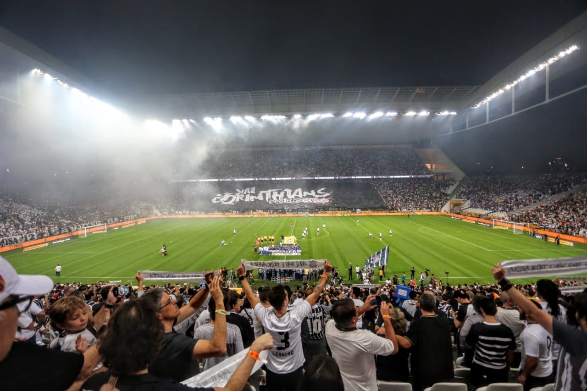
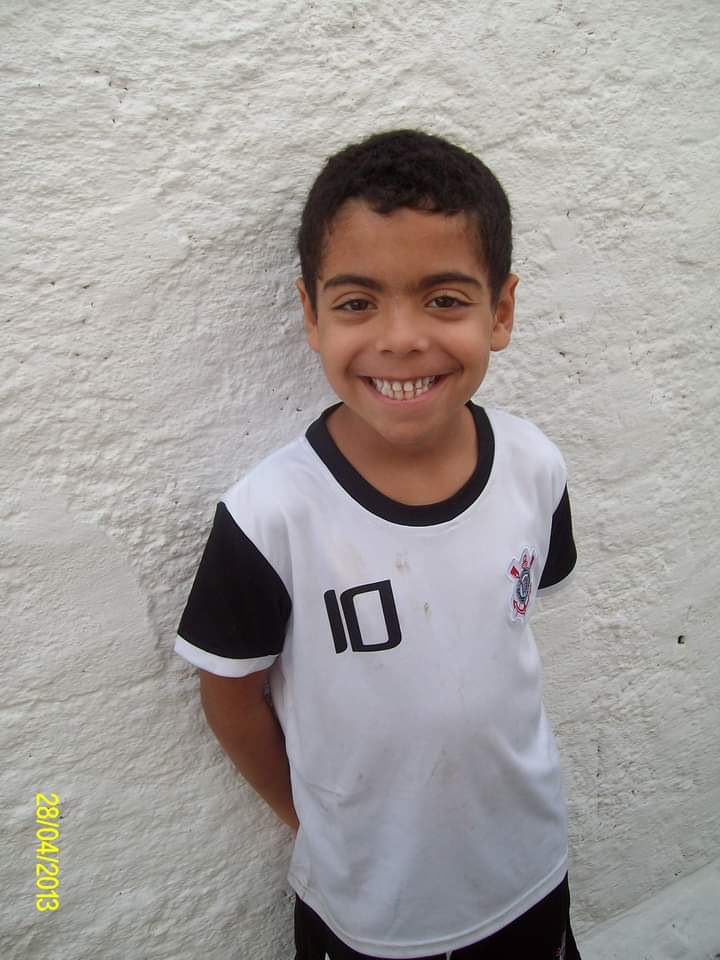
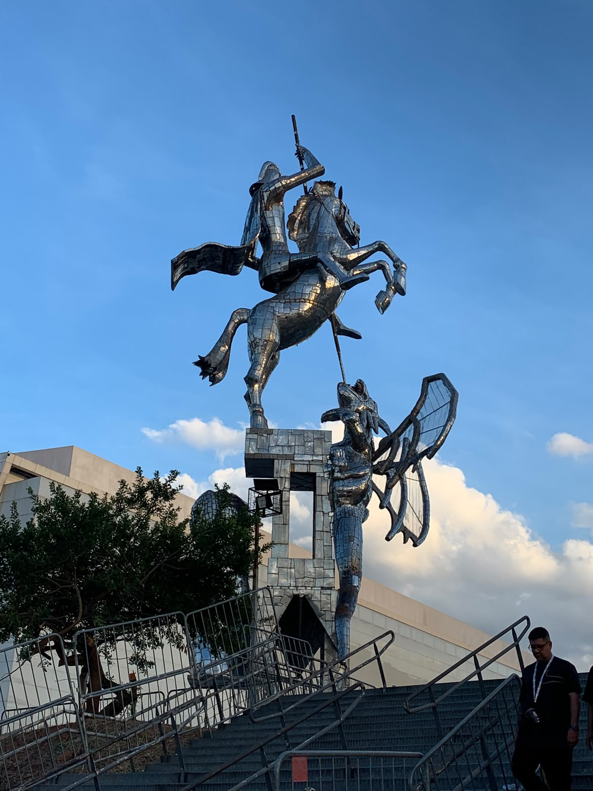
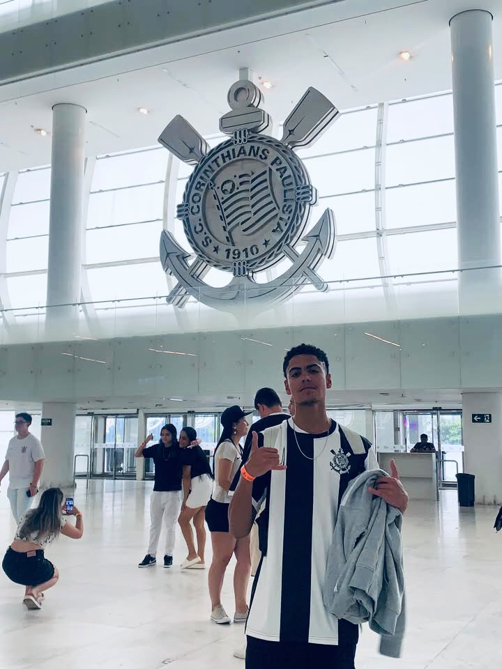
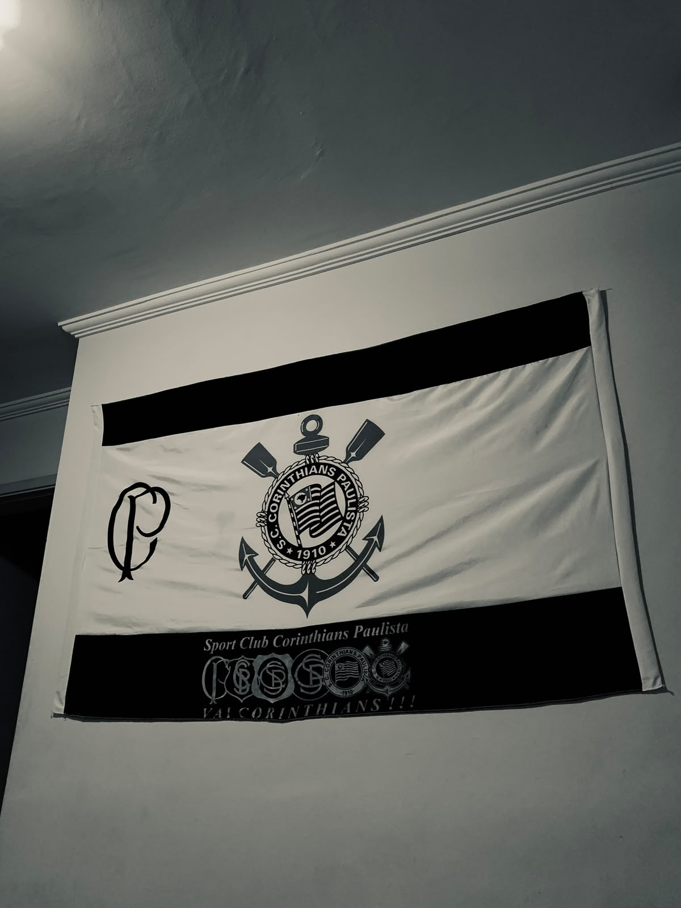

ALMA DA FIEL
Uma história que vive em cada torcedor
Das origens populares às conquistas eternas. Conheça a história, os ídolos e a cultura de um clube que nunca foi apenas futebol.
ALMA DA FIEL / NOSSA ESSÊNCIA
Uma paixão que não se escolhe, nasce com a gente.
Dizem que futebol é uma questão de escolha, mas acredito que, quando se trata do Corinthians, é diferente. Ninguém escolhe ser corinthiano. De alguma forma, todos nós já nascemos carregando esse sentimento, que cresce junto com a gente e passa a fazer parte de quem somos.
Desde pequeno, o Corinthians faz parte da minha vida. Mais do que acompanhar um time, é sobre sentir orgulho, criar lembranças e carregar uma paixão que não precisa de explicação. É algo que está presente na minha história e que levarei comigo por toda a vida.

Existem momentos que o tempo nunca será capaz de apagar.
Todo corinthiano tem momentos que gostaria de reviver. Para mim, a conquista do Mundial de 2012, contra o Chelsea, representa uma das maiores alegrias que esse clube já me proporcionou. O gol de Paolo Guerrero, a emoção daquela conquista e a festa de milhões de corinthianos são lembranças que marcaram a história do clube e ficaram guardadas na minha memória.
Mais do que levantar uma taça, aquele momento representou a realização de um sonho para uma torcida que sempre acreditou. É difícil explicar a sensação de ver o time que você ama conquistar o mundo. E talvez seja justamente isso que torna o Corinthians tão especial: não são apenas os títulos que ficam, mas tudo aquilo que sentimos e vivemos ao lado desse clube.


Não existem palavras ou títulos capazes de explicar.
Talvez essa seja a parte mais difícil de explicar para quem não sente o mesmo. Não existem palavras, conquistas ou troféus que consigam demonstrar o que um corinthiano sente ao ver seu time entrar em campo, ao ouvir o nome do clube ou simplesmente ao pensar no Corinthians.
Ser corinthiano é algo que vai além do futebol. É um sentimento que não depende de resultados, que permanece nos momentos difíceis e que se fortalece a cada geração. É olhar para esse clube e enxergar muito mais do que onze jogadores em campo. Tenho orgulho de fazer parte dessa história. Afinal, o Corinthians não é apenas um time pelo qual torço. É uma parte de mim.

